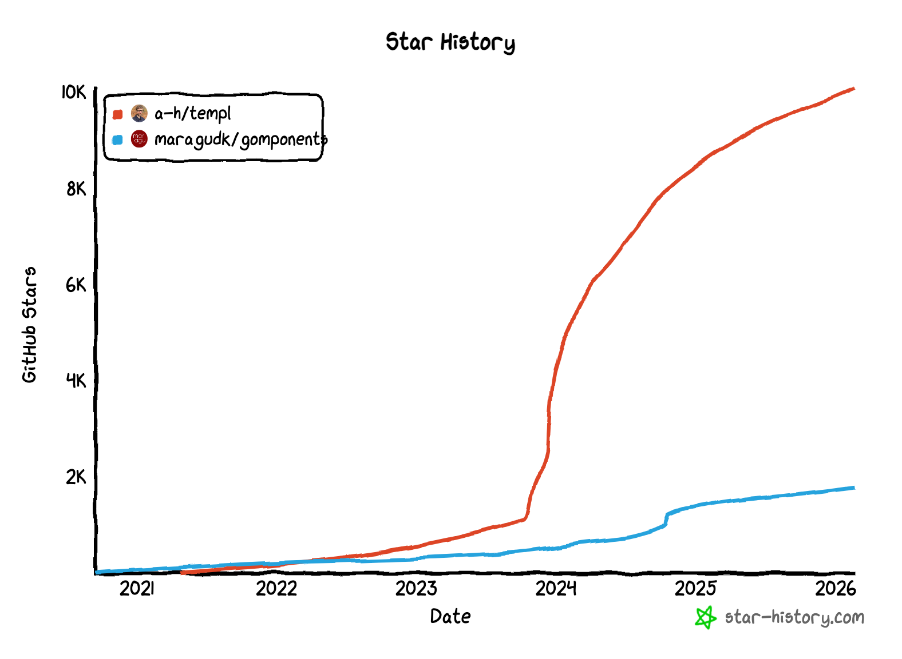

Putting the cart before the horse
Features are solutions to problems, and we cannot judge whether a solution is good if we don’t know what the problem being solved is.
Identity real problems and deficiencies with reading and writing Gleam today. Not predicted problems or suspected problems. Actual concrete pains that are present in real-world Gleam today. Persistent problems that cannot be reasonably solved with any of the options we have today in Gleam.
List the current approaches folks take to solve these problems and put into words why they are not enough. This will involve talking to other community members to discover how they’re approaching these problems, or even if they consider them problem at all. It may be that during this process you discover a satisfactory solution that you were not aware of!
And no, “I like this feature in this other language” and “it would be cool” are not valid problems! 😁
How to add metaprogramming to Gleam sensibly points out (metaprogramming) solutions should start with problems. The two big pain points (imo) are generating decoder/to_json fns and HTML templating. That said these do not justify adding metaprogramming; it is more important for Gleam to be readable and compile fast.
Manually generating JSON decoder and to_json fns for a lot of custom types (eg FHIR) feels like you're doing something unusual and difficult. There are LSP actions but you cannot easily hook into them as part of your codegen, and you cannot configure them to use camel case keys or treat optional fields as missing rather than null. Another awkward thing is decode.failure makes you construct an unused return, which is a bit of effort as Gleam has no null type. All of this is surmountable but could be easier with a bit of magic. I know some people like Gleam's decode but everyone's serialization reimplements basically the same thing so it is amenable to a little magic, maybe dipping into manual code for less common cases.
Nevertheless! A bit of pain in serialization is outweighed by how nice Gleam is overall, and fortunately serialization can be solved without adding macros to the language. You can create code generators that are easy to hook into and configure, making serialization easy for people who need it without adding macros or metaprogramming or whatever to the language. So any pain here is totally solveable.
HTML templating is trickier because people really like looking at HTML as they write templates, so you can't solve it with codegen tools. In fact https://lpil.github.io/html-lustre-converter/ exists, butthe experience people want is something like JSX or Razor Pages where you create HTML directly in your code.
I say "people", do I really just mean "me"? Well for example in Go, Gomponents is pure Go that renders to HTML whereas templ is its own little language that compiles to Go and proxies to the Go language server, and people seem to prefer templ:
There are downsides to templ, one big thing is if you get a panic on some line and click to jump to it, you go to the generated gibberish instead of the actual code that generate it. It requires its own tooling, just seems like a lot more complexity. Still, people put up with the added jankiness to write HTML as HTML.
Lustre's "No templates, no macros, just Gleam." does save a lot of jankiness and once you get used to it may even be better than writing HTML templates. Still, consider
<p>hi</p>
vs
h.p([], [h.text("hi")])
The first version is friendlier, not because it's inherently better, but because people are used to HTML looking like that and the browser shows HTML like that.